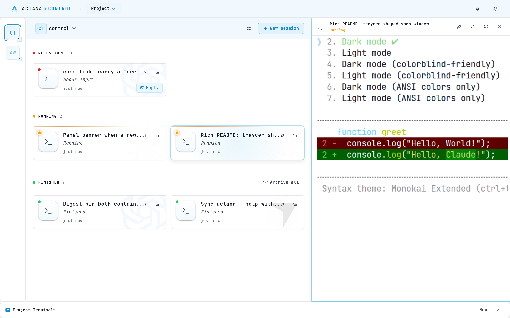
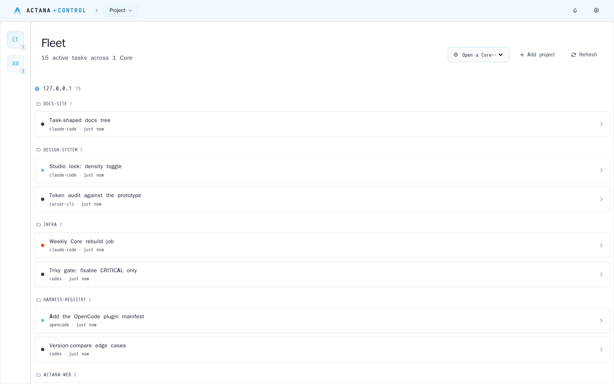

One Panel, many machines
The Panel holds no project or session state; it terminates a link to each Core and renders the union. Add a machine, and its work shows up in the same view.
Actana Control is a self-hosted control plane for agentic coding. One web Panel drives any number of Cores — machines running Claude Code, Codex, Cursor CLI and OpenCode in real PTY sessions against your git repos.
git clone https://github.com/actana/control && cd control
docker compose -f deploy/docker-compose.yml up -d
docker compose -f deploy/docker-compose.yml logs core # the registration blobThe whole product in one command — a Panel and a Core on one network. Open http://localhost:7420, create the Operator, paste that blob into “Add Core”.
curl -fsSL https://raw.githubusercontent.com/actana/control/main/install.sh | bashTurns a Linux or macOS (arm64) machine into a Core, as your own user, without sudo — for a machine that already has your code, paired to a Panel you deploy separately.
Pre-release. No release is published yet, so :latest and the installer’s releases/latest both 404. Until the first one, run the Compose path against the open release train’s beta image — ACTANA_TAG=beta-0.1.0 docker compose -f deploy/docker-compose.yml up -d, which moves the Panel and the Core together. That tag is published when the first train is cut; until then nothing is pullable yet. The installer one-liner works from the first release onward. Quickstart →

Claude Code · Codex · Cursor CLI · OpenCode work today — Hermes and Pi are next, and the family is open.
Why this one
Self-hosting and a web terminal are table stakes. What sets Actana apart is one Panel over many machines, each owning its own state — see the comparison table.
The Panel holds no project or session state; it terminates a link to each Core and renders the union. Add a machine, and its work shows up in the same view.
Every session is a PTY on the Core, streamed to the browser over one multiplexed WebSocket per tab. Type into it.
A Core runs on the machine that already has the repo. Nothing is uploaded, mirrored, or checked out anywhere else — and removing a project from the Panel only unlinks it. It never touches your files.
No telemetry, no analytics, no crash reporting — what leaves a machine, in full.

How it works
The Panel is a web service you deploy once. Each Core is a daemon on a machine that has your code; it owns the projects, the sessions, the SQLite database and the PTYs, and it is the only process that writes its own state. The two speak over a core-link — a WebSocket the Panel dials, authenticated by mutual TLS with material the Core mints at first run. Expose one HTTP port for the Panel and, on each Core, one port reachable from the Panel’s machine; that port needs no route from the public internet. More in CONTEXT.md and the ADRs.
Questions
For one machine, honestly, that is hard to beat — and Actana does not take it away from you. A Core is a daemon running as your own user on a machine you already have; nothing stops you from SSH-ing into that same machine and attaching the old way.
What changes is the plural. Every extra machine is another SSH session, another multiplexer to drive, and another set of pane and session-name conventions you keep in your head — set up by hand, then set up by hand again on the next box. And SSH gives you a terminal on a machine you have already picked; it cannot tell you which machine needs you. The Panel renders every Core's sessions in one list, split into needs-input / running / finished with per-project counts, so a session sitting on a question is visible without attaching to anything.
Not everything you code on is a box you would want to reach that way, either. A workstation that also runs Blender or Godot, a laptop that sleeps, a Mac — machines with your repos and your CLI credentials already on them, and no clean SSH story. The installer turns any of them into a Core as your own user, without sudo.
Three more things fall out of it. You reach it from a browser rather than from a shell with your keys in it. Nothing needs an inbound SSH port: the Panel dials each Core over mutual TLS, so a Core needs no route from the public internet at all. And projects, session records and task history live in that Core's own SQLite database rather than in a multiplexer's memory.
Yes, and it is a documented path rather than a trick — nothing in the architecture is a singleton. Split a host into containers and give each one its own Core: each gets its own filesystem, its own volumes and its own Harness credentials, and all of them show up in the same Panel. The reference Compose file ships a commented >>> second Core block for exactly this.
That is the answer when you want work isolated from itself — a risky refactor in one Core, the branch you are actually shipping in another, no shared working tree between them — and it is the same gesture whether the second Core is a container on this host or a laptop across the room. Adding a second Core →
A web terminal is one part of it, and it is table stakes — nearly everything in the comparison table renders a PTY in a browser. The two columns that are ours are the last two: many machines under one control plane, and each machine owning its own state. The Panel holds no project or session state; it terminates a link to each Core and renders the union.
No. A Core runs on the machine that already has the repo. Nothing is uploaded, mirrored, or checked out anywhere else — and removing a project from the Panel only unlinks it. It never touches your files.
There is no telemetry, no analytics and no crash reporting. Two outbound requests exist and that is the complete list: once every 24 hours the Panel and each Core ask the GitHub releases API whether a newer release exists — nothing is downloaded and nothing is applied, and ACTANA_UPDATE_CHECK=0 turns it off — and registry.npmjs.org is asked for the newest published version of each Harness CLI while you have the Providers settings page open, so it can tell you one is outdated.
Neither is required, and a Core is deliberately not a sandbox. The installer turns a Linux or macOS (arm64) machine into a Core as your own user, without sudo — the point is to run where your code, your git config and your Harness credentials already are. Your laptop, a workstation, a build box.
The Compose path exists for the other case: you want the whole product on one host to try it, in one command. If you would rather isolate a Core in its own container or VM, nothing stops you — but then it is a machine like any other, and it needs your code and credentials put into it the same way any machine would.
One HTTP port for the Panel, reachable by your browser. The Panel speaks plain HTTP and expects your own proxy to terminate TLS — it never grows certificate-management code.
On each Core, one port (default 8443) that needs to be reachable from the Panel's machine and from nowhere else. The Panel dials the Core, never the reverse, so that port needs no route from the public internet. In the reference Compose file the two share a network and nothing is published at all.
Claude Code, Codex, Cursor CLI and OpenCode work today; Hermes and Pi are the recorded next two. Each Core needs the CLIs it runs installed under its own user — actana setup offers the missing ones, and actana harnesses install <id> adds one later.
The family is open by design: a Harness is one registry entry plus a launcher, and nothing in the Panel or the core-link is specific to any of the four. Using one that is not here? Open an issue — that is how a row gets added.
Probably, if you also run one session at a time — tmux is fine, and we would rather say so than sell you something. The Compose path is one command, so finding out costs you very little. The reason to keep it is the second machine, or the fifth concurrent session.
It is MIT and it is self-hosted. There is no account with us, no hosted tier, and no in-app updater — you deploy two published images or run the installer, and you update them the way you update anything else. Your Harness subscriptions and API keys are yours, and they stay on the Core that uses them.
git clone https://github.com/actana/control && cd control
docker compose -f deploy/docker-compose.yml up -d
docker compose -f deploy/docker-compose.yml logs core # the registration blobcurl -fsSL https://raw.githubusercontent.com/actana/control/main/install.sh | bash